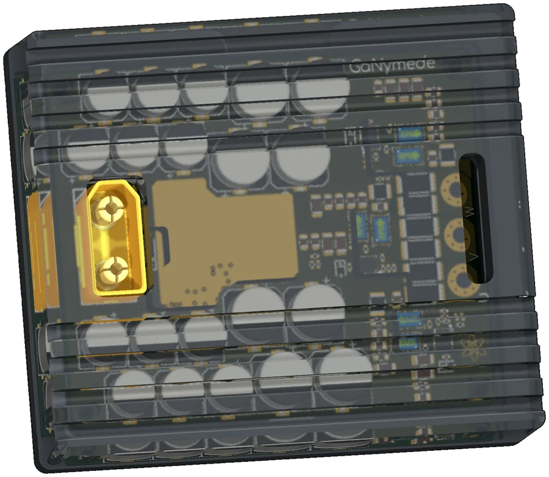

Work 02 Motor drive
Sixty volts,
a hundred amps.
A VESC-compatible three-phase drive for a direct-drive hub motor: six eGaN FETs, 0.25 mΩ phase shunts and 1.4 mF of bus capacitance wrapped around a 78 × 65 mm six-layer power stage.

01The brief
A direct-drive hub motor wants a lot of phase current in a small package, with no gearbox to hide the inefficiency. GaNymede is built for that: 50 A phase continuous, 100 A peak for one minute, phase-current and phase-voltage sensing on every leg, Hall inputs, and an ESP32-C3 for wireless telemetry.
The control side deliberately follows the VESC pattern — STM32F405, three Hall inputs, three phase-current channels — because the value of a VESC-compatible board is the firmware ecosystem, not a new one. The power stage is where the design earns its keep.
02Specification
| Bus voltage | up to 60 V DC |
|---|---|
| Phase current | 50 A continuous · 100 A peak (1 min) |
| Peak output | ≈ 5.2 kW at 100 A peak, m = 1, modelled |
| Topology | 3-phase inverter, 6× EPC2361 100 V eGaN |
| Switching | 20 kHz nominal (10–40 kHz analysed) |
| Gate drive | LMG1210, 5 V, 2.2 Ω |
| Current sense | 0.25 mΩ per phase · INA240A1, gain 20 |
| Control | STM32F405RGT6, 168 MHz, 8 MHz HSE |
| Wireless | ESP32-C3-WROOM-02 — Wi-Fi / BLE |
| CAN | 2× TJA1051TK-3 (STM32 + ESP32), shared bus |
| Bus capacitance | ≈ 1.4 mF, TVS protected (SMAJ60A) |
| PCB | 78 × 65 mm · 6 layers · 1.6 mm · 1 oz Cu |
03Decisions worth defending
The bus capacitor bank wraps the power stage. 1.4 mF is not a polite number of capacitors; placing them around the bridge instead of at one end keeps the commutation loop short and stops the DC link from becoming an inductor with a capacitor problem.
0.25 mΩ per phase, measured across two 0.5 mΩ shunts in parallel. Two 2512 resistors share the current and the heating, and an INA240A1 at a gain of 20 turns microvolts into something a 12-bit ADC can resolve at 100 A. The whole sensing chain is inside the power loop, so it is part of the layout, not an afterthought.
Dead time lives in firmware. The LMG1210s are strapped for independent high and low inputs rather than self-timed, which makes dead time a software parameter. That is the right place for it on a VESC target — but it means the gate drive is only as safe as the first bring-up.
Copper sized for the peak, not the average. A 100 A minute is a thermal event. The pours and the via stitching are sized for the whole minute, not for the 50 A number on the front of the datasheet.
04The loss model says something surprising
There is a full copper, semiconductor and thermal model in LOSSES.md. At 100 A peak it predicts about 29 W of total loss and 99.4 % efficiency; at 50 A continuous, about 7.3 W and 99.7 %.
The interesting part is where the heat comes from: the phase shunts and the 60 V/GND copper dominate the budget, not the six eGaN devices. Which changes the thermal design — the heatsink needs to move 5–6 W continuously and about 20 W by the end of a 100 A minute, so a 1.5–2 °C/W natural-convection sink is enough. The thermal pad under the FETs matters more than the heatsink, and the one-minute rating is limited by thermal mass rather than by the sink.
05A board can be a poster
The back of the board carries an engraved illustration of Ganymede — the moon, and the myth — rendered as silkscreen and copper pour. It costs nothing electrically and it makes the object worth picking up. If a board spends its life inside a housing, it may as well look like something on the way in.
06Where it stands
R1 is drawn and the six-layer layout is finished. The current and thermal figures above are design targets from the loss model, not bench measurements — the repository says so where the table is, and this page is not going to pretend otherwise.
